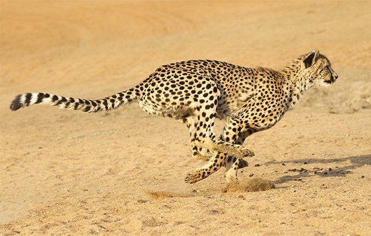

The cheetah (Acinonyx jubatus) is a large cat of the subfamily Felinae that occurs in
Southern, North and East Africa, and a few localities in Iran. The species is IUCN Red Listed as
vulnerable, as it suffered a substantial decline in its historic range in the 20th century due to
habitat loss, poaching, illegal pet trade, and conflict with humans. By 2016, the global cheetah
population has been estimated at approximately 7,100 individuals in the wild. Several African
countries have taken steps to improve cheetah conservation measures.[1]
It is the fastest land animal. The only extant member of the genus Acinonyx, the cheetah was
formally described by Johann Christian Daniel von Schreber in 1775. The cheetah is characterised by
a slender body, deep chest, spotted coat, small rounded head, black tear-like streaks on the face,
long thin legs and long spotted tail. Its lightly built, slender form is in sharp contrast with the
robust build of the big cats, making it more similar to the cougar. The cheetah reaches 70 to 90 cm
(28 to 35 in) at the shoulder, and weighs 21–72 kg (46–159 lb). Although taller than the leopard,
it is notably smaller than the lion. Typically yellowish tan or rufous to greyish white, the coat
is uniformly covered with nearly 2,000 solid black spots.
Cheetahs are active mainly during the day, with hunting their major activity. Adult males are
sociable despite their territoriality, forming groups called coalitions. Females are not
territorial; they may be solitary or live with their offspring in home ranges. Carnivores, cheetah
mainly prey upon antelopes and gazelles. They will stalk their prey to within 100–300 m (330–980
ft), charge towards it and kill it by tripping it during the chase and biting its throat to
suffocate it to death. Cheetahs can reach speeds of 112 km/h (70 mph) in short bursts, but the top
end speed of the cheetah is disputed by more recent measurements. The average speed of a cheetah
while hunting is about 64 km/h (40 mph). Cheetahs are induced ovulators, breeding throughout the
year. Gestation is nearly three months long, resulting in a litter of typically three to five cubs
(the number can vary from one to eight). Weaning occurs at six months; siblings tend to stay
together for some time. Cheetah cubs face higher mortality than most other mammals, especially in
the Serengeti region. Cheetahs inhabit a variety of habitats – dry forests, scrub forests and
savannahs.
Because of its prowess at hunting, the cheetah was tamed and used to kill game at hunts in the
past. The animal has been widely depicted in art, literature, advertising and animation.